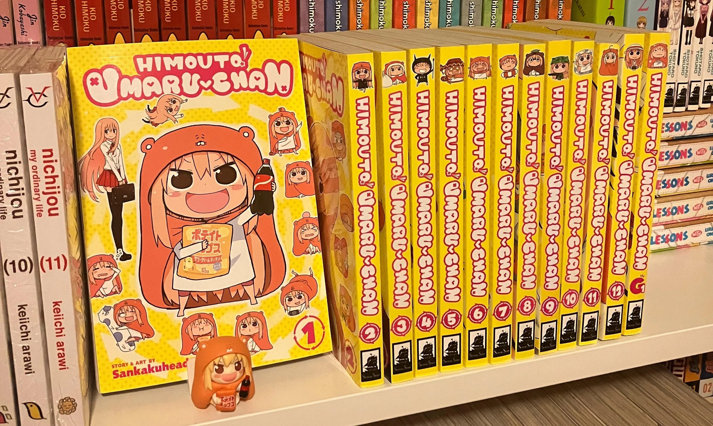

El lado oscuro del éxito: El creador de Himouto! Umaru-chan revela su triste realidad tras alcanzar la fama
El autor de esta comedia nos trae una cruda realidad sobre lo que pasa al llegar a la cima del manga.

Cumplir el sueño de tu vida y convertir tu obra en un fenómeno de masas debería ser el momento más feliz para cualquier artista, pero la realidad de la industria suele esconder matices sumamente complejos. El creador de la popular comedia Himouto! Umaru-chan decidió hablar con total honestidad sobre los inesperados desafíos emocionales y psicológicos que llegaron a su vida justo cuando alcanzó el éxito que tanto había perseguido como mangaka.
Aislamiento y estafadores al acecho
De acuerdo con el crudo testimonio del autor, llegar a la cima del mercado editorial no solo le trajo estabilidad y reconocimiento, sino también una profunda oleada de aislamiento. Al volverse una figura sumamente rentable, comenzó a ser el blanco de personas que se le acercaban únicamente para ofrecerle dudosas oportunidades de inversión y esquemas de estafas. Para empeorar las cosas en el ámbito personal, varios de sus amigos de toda la vida empezaron a distanciarse de él de manera inexplicable, transformando su entorno social en un espacio frío y desconfiado.
A pesar de lo difícil que fue lidiar con la pérdida de amistades y el acoso financiero, el autor confesó que el verdadero golpe fue algo de lo que muy pocos creadores se atreven a hablar abiertamente en Japón: la abrumadora crisis existencial que experimentó tras haber materializado su meta más grande. Durante años, su motor diario había sido imaginar el día en que triunfaría en la exigente industria del manga, pero cuando ese momento finalmente se consolidó, la recompensa no se pareció en nada a lo que esperaba.
El vacío absoluto tras cumplir la meta
En lugar de experimentar la satisfacción, la alegría o el alivio que idealizó durante su juventud, el mangaka se topó con un vacío interno sumamente denso. Al haber alcanzado la cumbre, se dio cuenta de que el objetivo principal que había guiado su vida por tanto tiempo había desaparecido de golpe, dejándolo sin un propósito claro y complicando su motivación para seguir tomando el lápiz y dibujar nuevos capítulos. Su testimonio expone un lado muy humano y poco explorado de las carreras creativas en Japón, donde el drástico cambio de estilo de vida, las presiones corporativas y la alteración de las relaciones afectivas suelen crear un escenario de vulnerabilidad emocional que nunca formó parte del sueño original.

Esta honesta reflexión ha generado un fuerte eco entre los lectores, quienes comprenden perfectamente que alcanzar una meta monumental a veces puede dejar a un individuo sintiéndose mucho más perdido y desorientado que antes de iniciar el viaje. El éxito comercial y la viralidad de un hit se celebran siempre con bombos y platillos de cara al público, pero la compleja transición psicológica de asimilar la vida después de la gloria es un proceso que los autores suelen arrastrar en la más estricta intimidad.
Descubrir que la cima no garantiza la felicidad nos hace replantearnos las expectativas que ponemos sobre nuestras metas. ¿Crees que la extrema presión y el ritmo de trabajo de la industria del manga agravan este sentimiento de vacío en los autores, o piensas que es una crisis existencial inevitable que experimenta cualquier persona al quedarse sin un objetivo por el cual luchar?